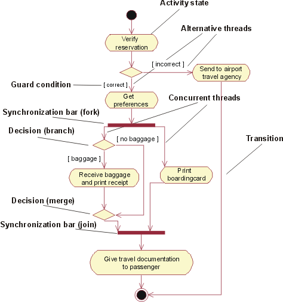
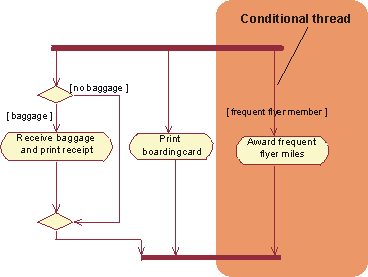
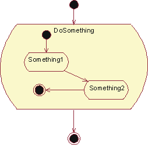
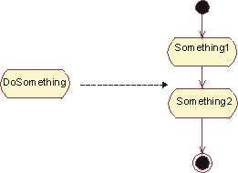
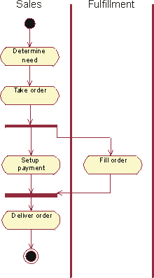
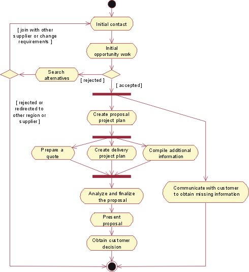
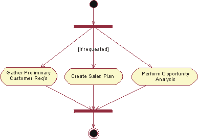

| Рекомендация: Activity Diagram in the Business Use-Case Model |
 |
|
| Связанные элементы |
|---|
ExplanationThe workflow of a business use case describes what the business must do to provide the value the served business actor requires. The business use case consists of a sequence of tasks that, together, produce something for the business actor. The workflow often consists of a basic flow and one or more alternative flows. The structure of the workflow is described graphically with the help of an activity diagram. An activity diagram of a workflow explores the ordering of tasks that accomplish business goals. A task may be manual or automated and completes a unit of work. Activity diagram is a special case of a statechart diagram in which all or most of the states are activity states and in which all or most of the transitions are triggered upon completion of actions in the source states. Basic Activity DiagramsAn activity diagram may have the following elements:
 An activity diagram for the business use case Individual Check-In in the business use-case model of Airport Check-In Conditional ThreadsGuard conditions are used to show that one of a set of concurrent threads is conditional. For instance, in the Individual Check-In example from the previous section, the passenger checking in might be a frequent-flyer member. In that case, you need to award the passenger frequent flyer miles.  An activity diagram for the business use case Individual Check-In in the business use-case model of Airport Check-Ins Nested Activity DiagramsAn activity state may reference another activity diagram, that shows the internal structure of the activity state. Stated another way, you can have nested activity graphs. You can either show the subgraph inside of the activity state or let the activity state refer to another diagram.  A nested activity graph shown within an activity state To show the subgraph inside of the activity state is convenient if you want to see all details of the workflow in one diagram. However, if there is any level of complexity in the presented workflow, this can make the diagram difficult to read.  Alternatively, put the subgraph in a separate diagram and let the activity state refer to it To simplify the workflow graph, you may instead choose to put the subgraph in a separate diagram and let the activity state that the subgraph details refer to that diagram. Using SwimlanesAn activity diagram may be partitioned into swimlanes using solid vertical lines. Each swimlane represents a responsibility for part of the overall workflow, carried by a part of the organization. Eventually, a swimlane may be implemented by an business system or by a set of classes in the business analysis model. The relative ordering of swimlanes has no semantic significance. Each activity state is assigned to one swimlane and transitions may cross lanes.  An activity diagram illustrates the workflow of a business use-case that represents a generic sales process. In this example, the swimlanes represent departments in the organization. Example of UseWhat comes first, the activity diagram or the textual description of the workflow? This depends somewhat on how you are used to working, and whether you think graphically or not. Some prefer to visually outline the structure in a diagram first, and then develop the details in the text. Others would rather start with a bulleted list of the activity states, agree on those, and then define the structure using a diagram. Another valid question is whether you really need both the textual document and the diagram. The activity diagram technique does allow you to write brief descriptions of each activity state, which should make the textual specification of the workflow obsolete. Here you need to be sensitive to your audience and what format they expect for the specification. We present a sample activity diagram for the workflow of the business use case Proposal Process as defined in Guideline: Business Use Case, to show what an activity diagram adds to the understanding of a workflow. This example is taken from an organization that sells telecom network solutions, individually configured for each customer.  An activity diagram for the business use case Proposal Process
 Sub-diagram to the activity state "Initial opportunity work". Creating a sales plan is optional, which is indicated by a guard condition on the incoming transition. An activity state can represent a fairly large procedure (with substructure), as well as something relatively small. If you're using activity diagrams to define the structure of a workflow, do not attempt to explore several levels of activity graphs down to their most atomic level. Doing so will most probably make the diagram, or set of diagrams if you are using separate subgraphs, very difficult to interpret. Aim to have one diagram that outlines the whole workflow where a few of the activity states may have subgraphs. |
© Copyright IBM Corp. 1987, 2006. Все права защищены.. |